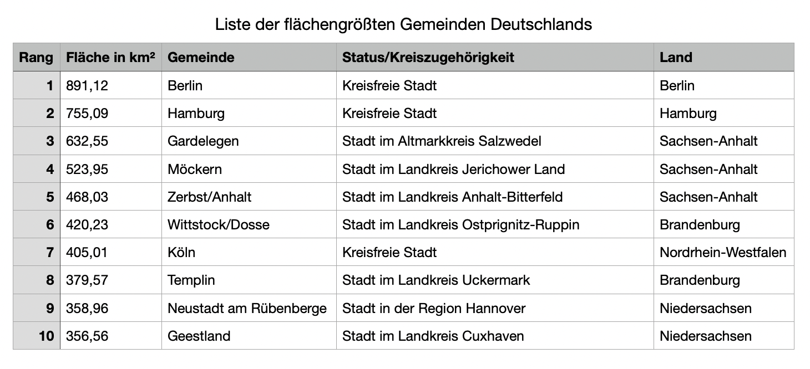
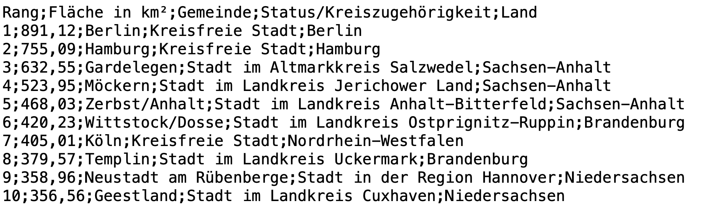

Input und Output#
In den ersten Notebooks haben wir gelernt, dass wir in Python effizient mit Objekten verschiedenster Datentypen arbeiten, indem wir sie Variablen zuweisen. Am Anfang hatten wir es bloß mit kleinen Objekten zu tun – etwa mit einzelnen Wörtern oder, wenn’s hoch kam, mit Sätzen. Diese haben wir bei der Variablenzuweisung jeweils komplett ausgeschrieben:
sentence = "Am Anfang haben wir eine Zeichenkette noch ausgeschrieben."
Im letzten Notebook haben wir dann zum ersten Mal mit größeren Objekten gearbeitet, nämlich mit den Koalitionsverträgen. Aufgrund der Größe (und der Tatsache, dass wir die Texte bereits extern in einer Datei vorliegen hatten) haben wir uns die Texte vom externen Speicherort in den Arbeitsspeicher geladen und Variablen zugewiesen.
Da wir fortan häufig mit größeren externen Dateien arbeiten, schauen wir uns in diesem Notebook genauer an, wie der sog. Input von Dateien funktioniert. Ebenso schauen wir uns das andere Ende an, nämlich den Output von Dateien, also das Speichern von Dateien auf einem externen Laufwerk. In diesem Notebook geht es also nicht primär darum, wie wir mit Daten in Python arbeiten, sondern wie diese Daten überhaupt erst für Python verarbeitbar werden und wie wir sie nach einer Verarbeitung durch Python wiederum für die Welt außerhalb Pythons zugänglich machen.
Weiter lernen wir in diesem Notebook, wie Benutzer:innen über Input für ein laufendes Programm dessen Ablauf beeinflussen oder kontrollieren können (wir haben diese Funktion bereits im dritten Notebook beim Oktopus-Ratespiel benutzt). Dadurch können wir interaktive Programme schreiben. Abschließend gehen wir detailliert auf die allgegenwärtige print-Funktion ein. Diese stellt ja auch eine Form von Output bereit, zwar (standardmäßig) nicht als Datei, aber als Zeichenkette in der Ausgabe.
Auch in diesem Notebook gibt es einen Anwendungsfall, den wir am Ende unter Einbezug der meisten hier erlernten Techniken lösen können. Mehr dazu weiter unten.
Dieses Notebook ist recht umfangreich und es ist empfehlenswert, sich die Inhalte verteilt über zwei oder mehr Lernsesssions anzuschauen.
Dateipfade#
Um Dateien von einem bestimmten Ort auf dem Laufwerk einzulesen bzw. an einem bestimmten Ort auszugeben, müssen wir uns mit Dateipfaden vertraut machen. Jede Datei auf Deinem Computer hat bekanntlich einen Namen, ein Dateisuffix (etwa „.txt“, wird z.T. ausgeblendet) und die Datei befindet sich in einem bestimmten Verzeichnis (auch Ordner genannt). Dieses Verzeichnis befindet sich wiederum in einem Verzeichnis, und so weiter, bis zum obersten Verzeichnis, dem Stamm des Laufwerks. Jede Datei hat also eine einzigartige Adresse und diese Adresse wird Dateipfad genannt.
Wie Du gleich sehen wirst, gibt es zwei Arten, einen Dateipfad anzugeben, nämlich absolut und relativ. Zusätzlich unterscheiden sich Dateipfade zwischen macOS und Windows. Dateipfade zu verstehen, ist überaus wichtig, um frustrierenden FileNotFoundError-Fehlern vorzubeugen.
Absolute Dateipfade#
Ein Dateipfad kann immer absolut, d.h. vollständig vom Stamm des Laufwerks bis zur gewünschten Datei, angegeben werden. Um an den absoluten Pfad einer beliebigen Datei heranzukommen, gibt es folgende Tricks:
Unter macOS: Navigiere im Finder zur gewünschten Datei und klicke die Datei mit zwei Fingern an (Rechtsklick), es öffnet sich ein Menüfenster. Drücke die Taste Option ⌥, wodurch sich einige Menüoptionen ändern. Wähle „Datei“ als Pfadname kopieren. Ein vollständiger Pfad unter macOS sieht z.B. so aus: „/Users/Name/Documents/Project/Folder/Notebook.ipynb“, beachte, dass Schrägstriche „/“ verwendet werden sowie, dass der absolute Pfad mit einem Schrägstrich beginnt.
Unter Windows: Navigiere im Explorer zur gewünschten Datei und klicke die Datei mit einem Rechtsklick an, während du Shift gedrückt hältst. Es öffnet sich ein Menüfenster. Wähle Als Pfad kopieren. Ein vollständiger Pfad unter Windows sieht z.B. so aus: „C:\Users\Name\Documents\Project\Folder\Notebook.ipynb“, beachte, dass Backslashes „" verwendet werden sowie, dass der absolute Pfad ohne Backslash beginnt. ⚠️ Achtung: der Backslash „" hat bei Python eine Spezialbedeutung innerhalb von strings, wie etwa bei „\n“, das bekanntlich für einen Zeilenumbruch steht. Um Python bei einem Windows-Dateipfad mitzuteilen, dass die darin verwendeten Backslashes nicht als Spezialzeichen interpretiert werden sollen, müssen wir ein „r“ vor das öffnende Anführungszeichen stellen. Obiger Pfad innerhalb von Python-Code muss also so ausschauen: r“C:\Users\Name\Documents\Project\Folder\Notebook.ipynb“.
In beiden Fällen wird der Pfad in die Zwischenablage kopiert und Du kannst ihn anschließend in Deinen Code einfügen (am besten mit der Tastenkombination command ⌘+ V (macOS) / Strg+ V (Windows)).
Beachte, dass die obersten Verzeichnisse eines absoluten Pfades, also diejenigen, die vom System vorgegeben sind, z.T. auf Englisch angegeben werden (selbst wenn sie in Deinem Dateimanager auf Deutsch angezeigt werden). Im vollständigen Pfad steht also ggf. Users und nicht Benutzer. Das geschieht aber automatisch, wenn Du den Pfad wie oben beschrieben kopierst.
✏️ Übung 1: Navigiere in Deinem Dateimanager zu fünf beliebigen Dateien in fünf verschiedenen Verzeichnissen. Kopiere die absoluten Dateipfade wie oben beschrieben und weise je einen Dateipfad einer der folgenden Variablen zu (innerhalb der Anführungszeichen).
#In diese Zelle kannst Du den Code zur Übung schreiben (so viel zu coden gibt es hier nicht 😅)
path_file1 = ""
path_file2 = ""
path_file3 = ""
path_file4 = ""
path_file5 = ""
Relative Dateipfade#
Ein Dateipfad kann stets auch relativ, d.h. vom aktuellen Arbeitsverzeichnis aus gesehen, angegeben werden. Am einfachsten ist das natürlich bei einer Datei, die sich im aktuellen Arbeitsverzeichnis befindet. Um auf diese zuzugreifen, geben wir bloß ihren Namen als Pfad an.
Weiter können wir vom aktuellen Arbeitsverzeichnis aus in ein (darin befindliches) Unterverzeichnis navigieren. Dazu beginnt der relative Pfad mit dem Namen des Unterverzeichnis, gefolgt von einem Schrägstrich sowie dem Namen der Datei. Diese Schreibweise mit dem Schrägstrich funktioniert innerhalb Pythons auf allen Betriebssystemen. Unsere Schnittstelle zu externen Dateien, die weiter unten vorgestellte open-Funktion, kümmert sich bei relativen Pfaden wenn nötig um die Konversion von Schrägstrich zu Backslash.
Letztlich können wir vom aktuellen Arbeitsverzeichnis aus auch aufwärts (zum Stamm des Laufwerks hin) navigieren. Indem wir zwei Punkte und einen Schrägstrich, also „../“, an den Anfang des relativen Pfads stellen, rücken wir eine Ebene nach oben (und durch „../../“ zwei Ebenen, etc.). Im Anschluss an den Schrägstrich folgt der Name der Datei, die sich im Oberverzeichnis befindet. Natürlich können wir vom Oberverzeichnis aus auch in ein anderes Unterverzeichnis als das aktuelle Arbeitsverzeichnis (eine Art „Schwesterverzeichnis“) navigieren.
Relative Dateipfade sind zwar fehleranfälliger als die einfach zu kopierenden, absoluten Dateipfade. Sie sind aber aus dreierlei Gründen zu bevorzugen: Erstens sind sie i.d.R. kürzer. Zweitens funktionieren sie auf allen Betriebssystemen. Drittens sind sie stabiler, da sie auch nach dem Verschieben oder Teilen eines Notebooks funktionieren, sofern die darin aufgerufenen Dateien entsprechend mitverschoben bzw. mitgeteilt wurden. Aus diesem Grund werden in diesen Notebooks auch stets relative Dateipfade verwendet und Du wurdest anfangs darum gebeten, die Ordnerstruktur der heruntergeladenen Dateien nicht zu verändern. Die hier verwendeten, relativen Dateipfade funktionieren solange, wie Du die Ordnerstruktur (konkret: das Verzeichnis „3_Dateien“ und die darin befindlichen Ordner und Dateien) nicht veränderst.
Versuche also immer relative Dateipfade zu verwenden.
Das os-Modul#
Im Zusammenhang mit Dateien auf Deinem Laufwerk ist das Modul os mit den Funktionen getcwd, chdir und listdir äußerst hilfreich. Sie werden in der folgenden Zelle angewandt und mithilfe von Kommentaren beschrieben:
import os
#gibt das aktuelle Arbeitsverzeichnis aus ("get current working directory")
print("Aktuelles Arbeitsverzeichnis:", os.getcwd())
"""mit dieser Funktion könnte man das aktuelle Arbeitsverzeichnis ändern; das tun wir aber nicht,
da die relativen Dateipfade weiter unten im Notebook sonst nicht mehr korrekt wären (s.o)."""
#os.chdir("new_path")
"""gibt die im aktuellen Arbeitsverzeichnis (oder beim in Klammern angegebenen Pfad) befindlichen Unterverzeichnisse
und Dateien als Liste aus; darunter auch einige, die vom Dateimanager i.d.R. ausgeblendet werden"""
print("\nDarin befindliche Unterverzeichnisse und Dateien: ")
for file in os.listdir():
print(file)
Aktuelles Arbeitsverzeichnis: /home/runner/work/yfrommherz.ch/yfrommherz.ch/website/programming/1_Notebooks
Darin befindliche Unterverzeichnisse und Dateien:
1_Einfuehrung.ipynb
Loesungen
4_Funktionen_und_Methoden.ipynb
6_Regulaere_Ausdruecke.ipynb
5_Input_und_Output.ipynb
2_Datentypen.ipynb
7_Datenanalyse.ipynb
3_Kontrollstrukturen.ipynb
Denk daran, dass Du ein externes Modul wie os am Anfang jedes Notebooks importieren musst, um damit arbeiten zu können.
Wie im vierten Notebook erklärt, müssen wir vor den Funktionsnamen jeweils den Modulnamen sowie einen Punkt setzen (z.B. os.getcwd), damit Python weiß, wo sich die gewünschte Funktion befindet. Alternativ könnten wir auch den import-Befehl zu from os import getcwd, chdir, listdir ändern, um so die entsprechenden Funktionen ohne Modulnamen davor aufzurufen.
Wenn Du es versäumst, os am Anfang zu importieren, erhältst Du NameError: name 'os' is not defined zurück. Das ist die gleiche Fehlermeldung, wie wenn Du versuchst mit einer (noch) nicht definierten Variable zu arbeiten. In beiden Fällen kann Python schlicht nichts mit den Namen anfangen.
✏️ Übung 2: Das aktuelle Arbeitsverzeichnis auf einem Windows-Rechner sei „C:\Users\Name\Documents\Project\Folder“. Du möchtest auf eine Datei zugreifen, die folgenden absoluten Dateipfad besitzt: „C:\Users\Name\Documents\Resources\file.csv“. Mithilfe welchen relativen Pfads können wir in Python auf „file.csv“ zugreifen?
#In diese Zelle kannst Du den Code zur Übung schreiben (immer noch nichts zu coden 😅)
🔧 Anwendungsfall: Einen Gedankenprotokollanten programmieren#
Beim Anwendungsfall in diesem Notebook wollen wir ein interaktives Programm schreiben, mit dessen Hilfe eine Benutzerin schlaue Gedanken protokollieren kann. Die Benutzerin soll durch das Programm geführt werden und entscheiden können, wo, d.h. in welchem (externen) Dokument, sie ihre Gedanken festhalten will. Sie soll sowohl neue Dokumente anlegen können, als auch in bestehende reinschreiben. Anschließend soll sie beliebig viele Gedanken in dieses Dokument einfügen können. Das folgende Video zeigt das fertige Programm „in Aktion“:
Die open-Funktion#
Die Schnittstelle zu externen Dateien bietet in Python die open-Funktion. Sie öffnet externe Dateien mittels folgender grundlegender Syntax:
open(file, mode)
Bei file setzen wir den absoluten oder relativen Dateipfad zur zu öffnenden Datei ein, und zwar als Zeichenkette, inklusive des Dateisuffixes und natürlich umrahmt von Anführungszeichen. Über den Parameter mode müssen bzw. können wir spezifizieren, was wir mit der zu öffnenden Datei machen wollen. open stellt drei verschiedene Modi zur Verfügung:
den Lesemodus für Input (
"r"): dies ist der Standardmodus, der Parameter"r"wird deswegen i.d.R. weggelassen (vgl. viertes Notebook beim Öffnen der Koalitionsverträge)den Schreibmodus für Output (
"w"): überprüft, ob die angegebene Datei im Verzeichnis existiert; wenn ja, wird deren Inhalt überschrieben; wenn nein, wird die Datei geschaffen und beschriebenden „Anhängmodus“ für Output (
"a"von append): überprüft, ob die angegebene Datei im Verzeichnis existiert; wenn ja, werden Daten (z.B. neue Zeilen bei einer Datei in Tabellenform) im Anschluss an die bereits existierenden Daten in der angegebenen Datei angehängt; wenn nein, wird die Datei geschaffen und beschrieben
Zum Schreiben bzw. Anhängen sieht der Funktionsaufruf also so aus:
open(file, "w")open(file, "a")
Die open-Funktion akzeptiert neben file und mode weitere Parameter, u.a. encoding, wo wir spezifizieren können, wie eine Datei enkodiert ist. Das Encoding einer Datei legt fest, nach welchem Schlüssel sämtliche Zeichen (Buchstaben in lateinischer Schrift sowie den allermeisten anderen Sprachen, Zahlen, Emojis…) in Nullen und Einsen übersetzt werden. Natürlich geht nichts ohne den korrekten Schlüssel. UTF-8 von Unicode ist Standard, sodass wir uns i.d.R. nicht den Kopf darüber zerbrechen müssen. Um Problemen vorzubeugen (insbesondere unter Windows), lohnt es sich trotzdem, standardmäßig encoding=utf-8 zu spezifizieren, und zwar beim Input sowie beim Output.
Input#
Wie wir bei den Koalitionsverträgen im letzten Notebook bereits gesehen haben, wird die open-Funktion zum Lesen von externen Dateien wie folgt syntaktisch eingebunden:
with open(file, encoding="utf-8") as read_file:
variable = read_file.read()
Wir benutzen hier den sog. with-Kontextmanager: Im with-Statement öffnen wir mittels open das übergebene file und weisen die geöffnete Datei direkt einer Variablen zu (hier read_file, aber wie immer kann man einen beliebigen Variablennamen wählen).
Eingerückt darunter wenden wir die read-Methode auf read_file an, d.h. die bislang nur geöffnete Datei wird nun eingelesen. Je nach dem, wie die externe Datei formatiert ist, müssen wir read durch eine andere geeignete Lesemethode ersetzen (s.u.). Das Resultat weisen wir in jedem Fall einer sinnvoll genannten variable zu. Die externe Datei befindet sich damit als Objekt im Arbeitsspeicher.
Diese Syntax für den Dateiinput entspricht natürlichsprachlich ungefähr: „Mit (with) der zu öffnenden (open) Datei (file) als (as), nennen wir es, read_file, tu alles, was nach dem Doppelpunkt (:) darunter eingerückt (⇥) steht (hier: lese (read) das read_file und weise es variable zu (=)).
Indem wir anschließend die Einrückung wieder verlassen, schließt der with-Kontextmanager die externe Datei automatisch. Die brauchen wir ja auch nicht mehr, da wir deren Inhalt nun in einem Python-Objekt im Arbeitsspeicher haben. Die Verwendung von with beim Umgang mit externen Dateien ist Best Practice. Abweichend davon begegnet man auch folgender Herangehensweise:
file = open("path", encoding="utf-8")
content = file.read()
file.close()
In der ersten Zeile wird die externe Datei geöffnet und in der zweiten gelesen. Anschließend muss die Datei wieder manuell geschlossen werden. Oft wird jedoch genau dieser letzte Schritt vergessen. Gewöhne Dir also an, stets den with-Kontextmanager im Umgang mit externen Dateien zu benutzen.
Output#
Für den Output von Dateien verwenden wir ebenfalls den with-Kontextmanager sowie die open-Funktion, aber wie oben erwähnt mit dem zusätzlichen Parameter "w" oder "a":
with open(file, "w", encoding="utf-8") as write_file:
for line in data:
write_file.write(line + "\n")
In diesem Beispiel iterieren wir über ein mit data referenziertes Listenobjekt (das wir im Code davor auf irgendeine Weise geschaffen haben) und schreiben mittels der write-Methode jedes Element (line) in eine neue Zeile von write_file (die neue Zeile kommt durch den abschließenden Zeilenumbruch im write-Befehl zustande, wobei dieser mit der jeweiligen line zu einem string konkateniert wird, da write nur ein Argument akzeptiert). Wie beim Input wird write_file nach Verlassen der (äußeren) Einrückung automatisch geschlossen. Je nach gewünschtem Outputformat (z.B. als Textdatei oder als Tabelle) kommen andere Schreibmethoden als write zum Einsatz (s.u.).
Im Folgenden schauen wir uns genauer an, wie wir mit den beiden wichtigsten Datenformaten, Textdateien und tabellarische Dateien, beim Input und Output umgehen.
Textdateien#
Textdateien sind grundlegend nach Zeilen strukturierte Dateien. Das trifft sowohl auf Microsoft Office-Dokumente mit dem Suffix „.docx“ zu, als auch auf sog. Plain Text Files (mit dem Suffix „.txt“). Letztere sind nur nach Zeilen strukturiert und können von den meisten Programmen auf sämtlichen Betriebssystemen und natürlich auch von Python geöffnet werden. Deshalb beschränken wir uns im Folgenden auf Plain Text Files.
Am Ende jeder Zeile in einer solchen Textdatei steht ein Zeilenumbruch, der als "\n" (ausgesprochen: backslash n oder newline) kodiert wird. Wenn wir eine „.txt“-Datei z.B. in Microsoft Word öffnen, werden uns i.d.R. nur die Zeilenumbrüche, nicht aber die dafür verantwortlichen Zeichen angezeigt (links im Screenshot unten). Optional können wir sie uns aber einblenden lassen (rechts im Screenshot unten).
Hier handelt es sich um die ersten paar Zeilen aus Gotthold Ephraim Lessings Miss Sara Sampson.
An den sichtbar gemachten Zeichen für Zeilenumbrüche sehen wir, dass die letzten beiden Redebeiträge jeweils nur in einer einzigen Zeile gespeichert sind. Hier werden sie bloß aufgrund der horizontalen Begrenzung des Fensters auf mehreren Zeilen angezeigt.
Auch bei Python werden Zeilenumbrüche nur in gewissen Fällen als Zeichen angezeigt, wie wir gleich sehen werden. Damit arbeiten können wir aber in jedem Fall, also auch wenn Zeilenumbrüche als Zeichen bei einer Ausgabe mal nicht angezeigt werden.
Das wollen wir jetzt ausprobieren. Dazu lesen wir den im Screenshot gezeigten Text sowie den Rest des ersten Aufzugs aus dem Trauerspiel in Python ein. Die Datei befindet sich im Ordner „3_Dateien/Miss_Sara_Sampson“. Die simpelste Methode zum Einlesen einer Datei heißt, wie oben erwähnt, read:
#um in den Ordner "3_Dateien" zu gelangen, navigieren wir mit "../" erst eine Ordnerebene nach oben
with open("../3_Dateien/Miss_Sara_Sampson/Miss_Sara_Sampson_Aufzug_1.txt", encoding="utf-8") as read_file:
miss_sara_sampson = read_file.read()
print(miss_sara_sampson[0:200], "\n")
"""Tipp: im Output hier werden Zeilenumbrüche nicht als Zeichen angezeigt;
will man dies forcieren, kann man die repr-Funktion verwenden"""
#print(repr(miss_sara_sampson[0:200]))
print(len(miss_sara_sampson))
Erster Aufzug
Erster Auftritt
Der Schauplatz ist ein Saal im Gasthofe.
Sir William Sampson und Waitwell treten in Reisekleidern herein.
Sir William. Hier meine Tochter? Hier in diesem elenden Wirt
26960
Bei read wird die gesamte Textdatei in einen einzigen langen string überführt. Da der erste Aufzug recht umfangreich ist (26960 Zeichen), geben wir hier mithilfe von Slicing nur die ersten 200 Zeichen aus. Indem Du die eckigen Klammern entfernst, kannst Du Dir den gesamten ersten Aufzug zu Gemüte führen (das ist nicht nötig, aber fürs weitere Verständnis lohnt es sich, ihn zumindest zu überfliegen).
Natürlich wollen wir den Text nicht nur lesen. Dafür hätten wir ein beliebiges Textverarbeitungsprogramm verwenden und uns das Programmieren sparen können. Programmieren bringt erst dann einen Vorteil, wenn wir es mit sinnvoll strukturierten Daten zu tun haben (dieses Merkmal ist hier ja u.a. durch die Zeilenumbrüche gegeben) und wir uns diese Strukturiertheit bei der Verarbeitung und Auswertung der Daten zunutze machen können.
Machen wir es konkret und stellen uns vor, wir würden gerne sämtliche Redebeiträge der Protagonistin Sara extrahieren. Wie bereits erwähnt, entspricht jeder Redebeitrag einer Zeile. Es macht in einem ersten Schritt also Sinn, dass wir das strukturelle Merkmal der Zeilenumbrüche ausnutzen und den Text in Zeilen (und damit in Redebeiträge) unterteilen. Dazu könnten wir split("\n") auf miss_sara_sampson anwenden. Es gibt aber genau dafür auch eine eigene Lesemethode:
with open("../3_Dateien/Miss_Sara_Sampson/Miss_Sara_Sampson_Aufzug_1.txt", encoding="utf-8") as read_file:
miss_sara_sampson = read_file.readlines()
print(miss_sara_sampson[0:5])
['Erster Aufzug\n', '\n', 'Erster Auftritt\n', '\n', 'Der Schauplatz ist ein Saal im Gasthofe.\n']
Mit readlines werden die einzelnen Zeilen einer Textdatei als string-Elemente in eine Liste aufgenommen. Über den print-Befehl lassen wir uns die ersten fünf Elemente, also die ersten fünf Zeilen, ausgeben. Wir sehen, dass einige Zeilen nur aus einem "\n" bestehen (natürlich zeigten sich diese leeren Zeilen auch schon bei der vorherigen Ausgabe). Diese leeren Zeilen können wir mithilfe der (bisher uneingeführten) string-Methode isspace entfernen:
#wir iterieren über alle Elemente in "miss_sara_sampson"
for line in miss_sara_sampson:
#wenn das Element nur (!) aus whitespace-Zeichen (und dazu gehören Zeilenumbrüche) besteht...
if line.isspace():
#...dann entfernen wir das betreffende Element aus der Liste
miss_sara_sampson.remove(line)
print(miss_sara_sampson[0:5])
['Erster Aufzug\n', 'Erster Auftritt\n', 'Der Schauplatz ist ein Saal im Gasthofe.\n', 'Sir William Sampson und Waitwell treten in Reisekleidern herein.\n', 'Sir William. Hier meine Tochter? Hier in diesem elenden Wirtshause?\n']
Hat geklappt!
Wir sehen auch, dass jeder string noch mit einem kodierten Zeilenumbruch endet. Dies ist überflüssig, da die Struktur, die im Fließtext durch die Zeilenumbrüche entstand, bereits in Form der Elemente auf der Liste widerspiegelt wird. Die kodierten Zeilenumbrüche können wir so entfernen:
preprocessed = []
for line in miss_sara_sampson:
#hier entfernen wir sämtliche whitespace-Zeichen am rechten Rand (trailing whitespace) und hängen das Resultat "preprocessed" an
preprocessed.append(line.rstrip())
print(preprocessed[0:5])
['Erster Aufzug', 'Erster Auftritt', 'Der Schauplatz ist ein Saal im Gasthofe.', 'Sir William Sampson und Waitwell treten in Reisekleidern herein.', 'Sir William. Hier meine Tochter? Hier in diesem elenden Wirtshause?']
Klappt ebenfalls.
Zeilenumbrüche (sowie sonstige whitespace-Zeichen) am rechten Rand können aber bereits beim Einlesen einer Textdatei entfernt werden. Dabei muss noch nicht mal eine Lesemethode verwendet werden. Zwar können wir uns die geöffnete Datei read_file nicht direkt als Zeichenkette ausgeben lassen (dafür brauchen wir die Lesemethoden read oder readlines; überzeuge Dich selbst davon, indem Du versuchst, read_file auszugeben), aber es ist praktischerweise möglich, über read_file zu iterieren. Die einzelnen Elemente entsprechen ganz einfach den Zeilen:
# dieser Code erledigt alle Schritte von oben auf einmal
with open("../3_Dateien/Miss_Sara_Sampson/Miss_Sara_Sampson_Aufzug_1.txt", encoding="utf-8") as read_file:
miss_sara_sampson = []
for line in read_file:
if line.isspace():
continue
miss_sara_sampson.append(line.rstrip())
#hier sparen wir uns noch mehr Zeilen mithilfe einer List Comprehension
#miss_sara_sampson = [line.rstrip() for line in read_file if not line.isspace()]
for i in range(3,8):
print(miss_sara_sampson[i])
Sir William Sampson und Waitwell treten in Reisekleidern herein.
Sir William. Hier meine Tochter? Hier in diesem elenden Wirtshause?
Waitwell. Ohne Zweifel hat Mellefont mit Fleiß das allerelendeste im ganzen Städtchen zu seinem Aufenthalte gewählt. Böse Leute suchen immer das Dunkle, weil sie böse Leute sind. Aber was hilft es ihnen, wenn sie sich auch vor der ganzen Welt verbergen könnten? Das Gewissen ist doch mehr als eine ganze uns verklagende Welt. – Ach, Sie weinen schon wieder, schon wieder, Sir! – Sir!
Sir William. Laß mich weinen, alter ehrlicher Diener. Oder verdient sie etwa meine Tränen nicht?
Waitwell. Ach! sie verdient sie, und wenn es blutige Tränen wären.
Hier überprüfen wir erst, ob die Zeile nur aus whitespace besteht, und wenn ja, dann überspringen wir sie (continue). Andernfalls hängen wir die am rechten Rand von whitespace bereinigte Zeile miss_sara_sampson an. Das Ergebnis ist das gleiche wie oben, nur haben wir uns dabei ein paar Zeilen Code gespart.
✏️ Übung 3: Lies den ersten Aufzug aus Lessings Nathan der Weise ein. Die Datei befindet sich im Unterverzeichnis „Nathan_der_Weise“ im Dateienordner. Finde heraus, welche der Figuren des Stücks (bereitgestellt in characters) am häufigsten erwähnt wird (wir unterscheiden nicht zwischen Erwähnungen in Redebeiträgen und sonst wo im Text, z.B. in der Sprecherkennzeichung).
Um Deine Fertigkeiten aus dem letzten Notebook gleich wieder einzusetzen, könntest Du dazu auch eine sortierte Frequenzliste mit allen Figuren und ihren jeweiligen Erwähnungshäufigkeiten erstellen.
#In diese Zelle kannst Du den Code zur Übung schreiben
characters = ["Sultan Saladin", "Sittah", "Nathan", "Recha", "Daja", "Tempelherr", "Derwisch", "Patriarch von Jerusalem", "Klosterbruder", "Emir"]
Die Antwort ist natürlich keine große Überraschung. 🙈
Zurück zu miss_sara_sampson, das ja mittlerweile eine Liste mit von trailing whitespace befreiten Zeilen darstellt. Die Liste enthält neben Redebeiträgen auch noch Metakommentare wie Sir William Sampson und Waitwell treten in Reisekleidern herein. (Index 3).
Um nun Saras Redebeiträge zu extrahieren, können wir uns den strukturellen Umstand zunutze machen, dass am Anfang aller Redebeiträge der Name der Figur gefolgt von einem Punkt steht:
saras_turns = []
for turn in miss_sara_sampson:
if turn.startswith("Sara."):
saras_turns.append(turn)
#als List Comprehension
#saras_turns = [turn for turn in miss_sara_sampson if turn.startswith("Sara.")]
#hier geben wir zur Überprüfung die Redebeiträge mit Indizes 10, 11, 12, 13, 14 aus
for i in range(10,15):
print(saras_turns[i], "\n")
print(len(saras_turns))
Sara. Meiner Tugend? Nennen Sie mir dieses Wort nicht! – Sonst klang es mir süße, aber itzt schallt mir ein schrecklicher Donner darin!
Sara. Mit den Augen der Liebe, Mellefont.
Sara. Einige Tage! Wie ist ein Tag schon so lang!
Sara. Mit der es Ihnen zuletzt doch wohl noch fehlschlägt.
Sara. Diese sollen die Zeugen unserer Verbindung sein? – Grausamer! so soll diese Verbindung nicht in meinem Vaterlande geschehen? So soll ich mein Vaterland als eine Verbrecherin verlassen? Und als eine solche, glauben Sie, würde ich Mut genug haben, mich der See zu vertrauen? Dessen Herz muß ruhiger oder muß ruchloser sein als meines, welcher nur einen Augenblick zwischen sich und dem Verderben mit Gleichgültigkeit nichts als ein schwankendes Brett sehen kann. In jeder Welle, die an unser Schiff schlüge, würde mir der Tod entgegenrauschen; jeder Wind würde mir von den väterlichen Küsten Verwünschungen nachbrausen, und der kleinste Sturm würde mich ein Blutgericht über mein Haupt zu sein dünken. – Nein, Mellefont, so ein Barbar können Sie gegen mich nicht sein. Wenn ich noch das Ende Ihres Vergleichs erlebe, so muß es Ihnen auf einen Tag nicht ankommen, den wir hier länger zubringen. Es muß dieses der Tag sein, an dem Sie mich die Martern aller hier verweinten Tage vergessen lehren. Es muß dieses der heilige Tag sein – Ach! welcher wird es denn endlich sein?
22
startswith tut ganz klar seinen Dienst.
Exkurs: Die Wahrheitsmatrix#
An dieser Stelle lohnt sich nochmal ein Blick in miss_sara_sampson, zur Vergewisserung, dass wir mit obiger Bedingung auch wirklich alle Redebeiträge von Sara extrahiert haben. Es könnte ja z.B. sein, dass ihr Name vor einem Redebeitrag aus welchem Grund auch immer kleingeschrieben ist („sara.“) oder aber, dass zwischen ihrem Namen und dem Punkt eine Klammer mit Metakommentaren steht.
Und tatsächlich: ein Redebeitrag beginnt so: „Sara (sie setzt sich).“ (Index 71 in miss_sara_sampson). Nach eingehender Prüfung wissen wir, dass dies auch der einzige Redebeitrag ist, der nicht von turn.startswith("Sara.") „eingefangen“ wird. Wir könnten nun etwas unelegant die zusätzliche Bedingung or turn.startswith("Sara (sie setzt sich).") aufstellen.
Um sicherzustellen, dass der Code wiederverwendbar ist (z.B. beim zweiten Aufzug), wählen wir den eleganteren Weg der regulären Ausdrücke (engl.: regular expressions, abgekürzt: RegEx). Reguläre Ausdrücke sind ein äußerst praktisches Werkzeug, das wir uns im nächsten Notebooks im Detail anschauen. Kurz gesagt: Wir definieren hier einen regulären Ausdruck (pattern), der sowohl Redebeiträge mit als auch solche ohne Metakommentar abdeckt. Lässt sich der definierte reguläre Ausdruck wie eine Schablone über den Anfang eines Elements in miss_sara_sampson legen, dann haben wir einen sog. match und wir hängen das Element an saras_turns an. Wie wir sehen, erhalten wir dadurch 23 statt bisher 22 Redebeiträge zurück:
import re
saras_turns = []
#sieht kryptisch aus 🤯 und Du musst diesen regulären Ausdruck im Moment noch nicht nachvollziehen können
pattern = r"Sara(\(\s\S*\))?."
for turn in miss_sara_sampson:
if re.match(pattern, turn):
saras_turns.append(turn)
for i in range(5):
print(saras_turns[i], "\n")
print(len(saras_turns))
Sara. Mellefont. Norton.
Sara. Ach, Mellefont, wenn es nichts als eine unruhige Nacht wäre – –
Sara. Mellefont.
Sara (sie setzt sich). Ich beunruhige Sie sehr früh; und werden Sie mir es vergeben, daß ich meine Klagen wieder mit dem Morgen anfange?
Sara. Was sollte ich Ihnen nicht vergeben? Sie wissen, was ich Ihnen bereits vergeben habe. Aber die neunte Woche, Mellefont, die neunte Woche fängt heute an, und dieses elende Haus sieht mich noch immer auf eben dem Fuße als den ersten Tag.
23
Das Überprüfen, ob wir mit der aufgestellten Bedingung auch wirklich alle wahren Redebeiträge von Sara abdecken, ist ein sehr wichtiger Schritt. Konkret verhindern wir dadurch sog. false negatives im Sinne einer Wahrheitsmatrix:
ein Redebeitrag von Sara |
kein Redebeitrag von Sara |
|
|---|---|---|
Test positiv |
true positive |
false positive |
Test negativ |
false negative |
true negative |
False negatives sind Fälle, die in Wahrheit Redebeiträge von Sara sind, die aber fälschlicherweise nicht als solche erkannt wurden. Mit anderen Worten: der Test (die Bedingung, die wir aufgestellt haben) fiel negativ aus (die Bedingung ergab False), aber dieses Testresultat ist falsch. True/False bezieht sich bei allen vier Begriffspaaren jeweils auf die Richtigkeit des Testresultats und positive/negative auf das gefällte Testresultat.
Konsequenterweise müssen wir umgekehrt sicherstellen, dass wir mit der aufgestellten Bedingung nicht übers Ziel hinaus schießen und false positives „einfangen“, also Redebeiträge, die nicht von Sara sind, aber fälschlicherweise als solche erkannt wurden. Tatsächlich sind das erste und dritte Element in saras_turns (Indizes 0/2) keine Redebeiträge von Sara, sondern bloß Metakommentare:
#dies sind die beiden false positives
print(saras_turns[0:3:2])
['Sara. Mellefont. Norton.', 'Sara. Mellefont.']
Ein Blick auf alle Elemente in saras_turns verrät, dass diese die einzigen beiden false positives sind.
Wir müssen also eine zweite Bedingung aufstellen, um diese beiden Fälle auszuschließen. Sie haben gemeinsam, dass nach „Sara.“ „Mellefont.“ steht. Bevor wir eine entsprechende Ausschlussbedingung aufstellen, müssen wir überprüfen, ob dies nicht auch auf wahre Redebeiträge (true positives) zutrifft (es ist ja denkbar, dass Sara einen Beitrag mit „Mellefont.“ anfängt). Dies ist aber nicht der Fall.
Die zweite Bedingung stellen wir so auf: Das zweite Wort (Index 1) auf einer Liste mit allen Wörtern im jeweiligen turn (die Wörterliste erhalten wir mittels split) darf nicht (!=, vgl. Vergleichsoperatoren ) „Mellefont.“ sein. Wenn dies wahr ist, und die erste Bedingung ebenfalls (and), dann hängen wir den turn an saras_turns an.
saras_turns = []
pattern = r"Sara( \S*)?."
for turn in miss_sara_sampson:
if re.match(pattern, turn) and turn.split()[1] != "Mellefont.":
saras_turns.append(turn)
print(len(saras_turns))
#for turn in saras_turns:
#print(turn, "\n")
21
Eine letzte Überprüfung zeigt, dass wir damit wirklich alle wahren Redebeiträge von Sara (alle true positives) extrahiert haben (um das Bild zu vervollständigen: alle nicht extrahierten Elemente sind die true negatives).
Dieses Beispiel lehrt uns, dass wir iterativ vorgehen müssen, wenn wir mit strukturellen Merkmalen arbeiten. Selten denken wir von Anfang an an alle Ausnahmen, die beachtet werden müssen, um wirklich das gewünschte Ergebnis zu errechnen.
Übrigens haben wir für die letzte Bedingung keine besonders elegante Lösung gewählt. Sie schließt nur spezifisch Mellefont aus und keine weiteren Figuren. Gleichzeitig deckt sie wie gesagt theoretisch auch Fälle ab, wo „Mellefont.“ das erste Wort eines Redebeitrags von Sara ist. Während wir es bei der ersten zusätzlichen Bedingung noch mit einfacher fassbaren strukturellen Merkmalen (nämlich den optionalen Metakommentaren in Klammern) zu tun hatten, zeigen sich hier die Grenzen von Datenfilterung basierend auf strukturellen Merkmalen. Denn „Mellefont.“ besteht strukturell aus Buchstaben und einem Punkt, wie sie auch in wahren Redebeiträgen von Sara vorkommen. Neben der iterativen Herangehensweise, sind in solchen Fällen also auch sehr spezifische und vermeintlich unelegante Bedingungen in Ordnung.
✏️ Übung 4: Im Gegensatz zu Miss Sara Sampson ist Nathan der Weise etwas anders formatiert, z.B. verteilen sich Redebeiträge z.T. über mehrere Zeilen.
Lies den ersten Aufzug aus Nathan der Weise abermals ein. Schaue Dir die Formatierung des Textes genau an, um ein strukturelles Merkmal zu finden, anhand dessen Du eine Liste mit zusammengehörigen Redebeiträgen und Metakommentaren erstellen kannst. Ein über mehrere Zeilen verteilter Redebeitrag oder Metakommentar soll jeweils in ein Element einfließen.
Bereinige anschließend die Liste von allem, was kein Redebeitrag darstellt. Auch hierfür musst Du Dir die Liste gut anschauen, um ein strukturelles Merkmal zu identifizieren, anhand dessen Du die „Spreu vom Weizen“ trennen kannst. Sollte sich ein Metakommentar innerhalb eines Redebeitrags befinden, kannst Du dies ignorieren. Stelle durch einen iterativen Ansatz sicher, dass Du am Ende wirklich alle Redebeiträge und nur Redebeiträge auf der Liste hast (also die true positives).
Dir steht wiederum eine Liste mit Figuren zur Verfügung.
#In diese Zelle kannst Du den Code zur Übung schreiben
characters = ["Sultan Saladin", "Sittah", "Nathan", "Recha", "Daja", "Tempelherr", "Derwisch", "Patriarch von Jerusalem", "Klosterbruder", "Emir"]
Nun haben wir verschiedene Techniken zum Einlesen von Textdateien kennengelernt. Hier folgt eine kurze Zusammenfassung, wann Du welche Technik anwenden kannst:
readüberführt die gesamte Datei in einen einzigen stringreadlinesüberführt die einzelnen Zeilen der Datei in Elemente auf einer Listefor line in read_fileiteriert über die geöffnete Datei (ohne jegliche Lesemethode), wobeilineeiner Zeile in der Datei entsprichtstrip(meistens spezifischrstrip) entfernt (trailing) whitespace, insbesondere Zeilenumbrücheisspacein einemif-Statement mitcontinueüberspringt leere Zeilen
Schauen wir uns nun an, wie wir Text in eine Datei schreiben können. Wir arbeiten dafür mit dem Ergebnis der letzten Übung, also mit der Liste an Redebeiträgen im ersten Aufzug von Nathan der Weise, weiter. Damit wir auf dem gleichen Stand sind, steht in der nächsten Zelle eine mögliche Lösung der Aufgabe. Wenn Du sie ausführst, siehst Du bereits anhand der ersten fünf Redebeiträge, dass diese in sich unterschiedlich formatiert sind. Zum Teil folgt auf den Figurenamen nach dem Punkt ein Zeilenumbruch, zum Teil mehrere Leerschläge.
characters = ["Sultan Saladin", "Sittah", "Nathan", "Recha", "Daja", "Tempelherr", "Derwisch", "Patriarch von Jerusalem", "Klosterbruder", "Emir"]
with open("../3_Dateien/Nathan_der_Weise/Nathan_der_Weise_Aufzug_1.txt", encoding="utf-8") as read_file:
nathan_der_weise = read_file.read()
belongs_together = nathan_der_weise.split("\n\n")
actual_turns = []
for element in belongs_together:
for character in characters:
if element.startswith(character + "."):
actual_turns.append(element)
for i in range(5):
print(actual_turns[i], "\n")
Daja.
Er ist es! Nathan! – Gott sei ewig Dank,
Daß Ihr doch endlich einmal wiederkommt.
Nathan.
Ja, Daja; Gott sei Dank! Doch warum endlich?
Hab ich denn eher wiederkommen wollen?
Und wiederkommen können? Babylon
Ist von Jerusalem, wie ich den Weg,
Seitab bald rechts, bald links, zu nehmen bin
Genötigt worden, gut zweihundert Meilen;
Und Schulden einkassieren, ist gewiß
Auch kein Geschäft, das merklich födert, das
So von der Hand sich schlagen läßt.
Daja. O Nathan,
Wie elend, elend hättet Ihr indes
Hier werden können! Euer Haus ...
Nathan. Das brannte.
So hab ich schon vernommen. – Gebe Gott,
Daß ich nur alles schon vernommen habe!
Daja.
Und wäre leicht von Grund aus abgebrannt.
Unser Ziel ist es, die Redebeiträge in einheitlicher Formatierung in eine externe Datei zu schreiben. Der folgende Code übernimmt die einheitliche Formatierung. Lies die Kommentare aufmerksam, um den Code nachzuvollziehen.
#am Ende hängen wir die vereinheitlichten Redebeiträge an diese Liste an
standardized_turns = []
#wir iterieren über die einzelnen Redebeiträge in "actual_turns"
for turn in actual_turns:
"""Als Nächstes splitten wir den 'turn' ein einziges Mal beim ersten Punkt, der ja auf den
Figurennamen folgt (damit wir nur einmal splitten und nicht bei jedem Punkt, setzen wir den
optionalen Parameter maxsplit auf 1). Dadurch entsteht eine Liste, wobei das erste Element
(mit Index 0) der Figurenname ist. Diesen weisen wir 'turn_speaker' zu."""
turn_speaker = turn.split(".", maxsplit=1)[0]
#das zweite Element (mit Index 1) ist ja der eigentliche Redebeitrag, wir weisen ihn "turn_words" zu
turn_words = turn.split(".", maxsplit=1)[1]
"""genau dieser Redebeitrag enthält nun leading whitespace (was sowohl Zeilenumbrüche als auch
Leerschläge umfasst). Wir entfernen diese und weisen das Resultat 'turn_words_stripped' zu"""
turn_words_stripped = turn_words.lstrip()
#nun konkatenieren wir einheitlich Figurennamen und Redebeitrag mit einem Doppelpunkt und Zeilenumbruch dazwischen
standardized_turn = turn_speaker + ":\n" + turn_words_stripped
"""den standardisierten Redebeitrag hängen wir an 'standardized_turns' an"""
standardized_turns.append(standardized_turn)
#sämtliche Schritte in einem Statement sähe übrigens so aus:
#standardized_turns.append(turn.split(".", 1)[0] + ":\n" + turn.split(".", 1)[1].lstrip())
for i in range(5):
print(standardized_turns[i], "\n")
Daja:
Er ist es! Nathan! – Gott sei ewig Dank,
Daß Ihr doch endlich einmal wiederkommt.
Nathan:
Ja, Daja; Gott sei Dank! Doch warum endlich?
Hab ich denn eher wiederkommen wollen?
Und wiederkommen können? Babylon
Ist von Jerusalem, wie ich den Weg,
Seitab bald rechts, bald links, zu nehmen bin
Genötigt worden, gut zweihundert Meilen;
Und Schulden einkassieren, ist gewiß
Auch kein Geschäft, das merklich födert, das
So von der Hand sich schlagen läßt.
Daja:
O Nathan,
Wie elend, elend hättet Ihr indes
Hier werden können! Euer Haus ...
Nathan:
Das brannte.
So hab ich schon vernommen. – Gebe Gott,
Daß ich nur alles schon vernommen habe!
Daja:
Und wäre leicht von Grund aus abgebrannt.
Das schaut doch gleich viel besser aus. Zeilenumbrüche innerhalb der Redebeiträge haben wir übrigens unberührt gelassen, schließlich handelt es sich um ein dramatisches Gedicht.
Nun wollen wir die Redebeiträge in eine externe Datei schreiben. Wie oben erklärt, öffnen wir dazu die gewünschte Datei im Schreibmodus ("w"). Da die unten angegebene Datei noch nicht im Verzeichnis existiert, wird sie automatisch neu geschaffen. Anschließend iterieren wir über standardized_turns und schreiben Element für Element (Zeile für Zeile) in die geöffnete Datei (write). Wichtig: die Zeilenumbrüche müssen wir explizit reinschreiben:
"""hier geben wir einerseits den Speicherort an, gleichzeitig geben wir der Datei
auch einen Namen; bei Textdateien hängen wir stets '.txt' als Dateisuffix an!"""
with open("../3_Dateien/Output/Nathan_der_Weise_Aufzug_1_standardisiert.txt", "w", encoding="utf-8") as write_file:
for element in standardized_turns:
"""da es auch innerhalb der Redebeiträge Zeilenumbrüche gibt, schreiben wir
wie in der ursprünglichen Datei zwei Zeilenumbrüche nach jedem Redebeitrag"""
write_file.write(element + "\n\n") #Konkatenation zu einem string mittels +-Operator, damit ein Argument (also nicht kommasepariert zwei Argumente!)
Nun solltest Du die neue Datei im angegebenen Verzeichnis vorfinden. Du kannst sie entweder wieder in Python einlesen, oder mit einem Textverarbeitungsprogramm auf Deinem Computer öffnen.
✏️ Übung 5: Bisher haben wir nur mit dem ersten Aufzug aus Miss Sara Sampson gearbeitet. Das Trauerspiel besteht aber aus fünf Aufzügen, die sich allesamt im gleichen Verzeichnis wie der erste Aufzug befinden.
Öffne eine neue Textdatei mit Namen „Miss_Sara_Sampson_komplett.txt“ im Verzeichnis „Output“ und schreibe alle fünf Aufzüge in der richtigen Reihenfolge in diese Datei.
Anstatt jede Datei über ihren Pfad einzeln zu öffnen, kannst Du die oben bereits vorgestellte listdir-Funktion des os-Moduls verwenden. Als Argument übergibst Du ihr den Pfad zum betreffenden Verzeichnis. Du kriegst eine Liste mit den darin befindlichen Dateien und Unterverzeichnissen (jeweils als string) zurück. Über diese Liste kannst Du dann wie gewohnt iterieren.
#In diese Zelle kannst Du den Code zur Übung schreiben
Soviel zu Textdateien.
Wenden wir uns den tabellarischen Dateien zu.
Tabellarische Dateien#
Tabellarische Dateien kennst Du von Microsoft Excel (oder vergleichbaren Programmen). An der Benutzeroberfläche sind sie in Spalten und Zeilen organisiert, wie wir hier am Beispiel einer Tabelle über die zehn flächengrößten Gemeinden Deutschlands sehen:
Der einzige strukturelle Unterschied zu Textdateien ist, dass es neben Zeilen auch eine zweite Strukturdimension gibt, nämlich die Spalten.
„Hinter den Kulissen“ werden die einzelnen Spalten durch ein Trennzeichen (verwirrenderweise teils separator, teils delimiter auf Englisch) strukturiert. Bei dieser Datei sind dies Semikola (Strichpunkte), wie wir hier sehen:
Die Zeilen wiederum werden wie bei Textdateien durch Zeilenumbrüche strukturiert, wobei die dafür zuständigen Zeichen im Screenshot oben einmal mehr nicht sichtbar sind.
Wenn wir tabellarische Dateien einlesen, müssen wir wissen, mithilfe welchen Trennzeichens sie auf der Spaltenebene strukturiert sind, damit die Daten einer Zeile an den richtigen Orten in Spalten unterteilt werden. Neben Semikola (";") sind Kommata (",") oder Tabs ("\t") übliche Trennzeichen. Wenn, wie oben, Semikola das Trennzeichen sind, können die anderen üblichen Trennzeichen ohne Weiteres zwischen den Semikola vorkommen (siehe z.B. die Kommata in den Flächenangaben). Auch beim Schreiben von tabellarischen Dateien müssen bzw. können wir spezifieren, welches Trennzeichen verwendet werden soll.
Zur Arbeit mit tabellarischen Daten (sowie generell für fortgeschrittene Datenanalyse) gibt es die Bibliothek pandas, der das übernächste Notebook gewidmet ist. Hier schauen wir uns das csv-Modul an, das sich für den einfachen Umgang mit tabellarischen Daten eignet.
Das csv-Modul#
Wie üblich importieren wir das csv-Modul zu Beginn. Ebenfalls setzen wir stets „csv.“ vor den Namen von Funktionen aus diesem Modul (vgl. oben zum os-Modul).
Die Datei mit den flächengrößten Gemeinden lesen wir natürlich auch mittels open, eingebettet in ein with-Statement, ein. Das read_file übergeben wir zusammen mit dem korrekten Trennzeichen (delimiter=";") der reader-Funktion (beachte die „agentive“ Benennung von Funktionen im csv-Modul). Standardtrennzeichen ist übrigens das Komma (der Name des Moduls ist nämlich eine Abkürzung für comma-separated values), das wie immer nicht angegeben werden muss.
Die reader-Funktion gibt uns nun nicht ein gewöhnliches Python-Objekt zurück (etwa einen string oder eine Liste wie beim Textinput), sondern ein _csv.reader object, das wir mit data referenzieren. Über dieses _csv.reader object können wir wie gewohnt iterieren und die einzelnen Zeilen einer Liste anhängen. Wir müssen das innerhalb der Einrückung machen, da das _csv.reader object zusammen mit read_file wieder geschlossen wird, sobald wir die Einrückung verlassen:
import csv
with open("../3_Dateien/Tabellarische_Daten/Liste_der_flächengrössten_Gemeinden_Deutschlands.csv", encoding="utf-8") as read_file:
data = csv.reader(read_file, delimiter=";")
biggest_municipalities = []
for row in data:
biggest_municipalities.append(row)
for i in range(6):
print(biggest_municipalities[i])
['Rang', 'Fläche in km²', 'Gemeinde', 'Status/Kreiszugehörigkeit', 'Land']
['1', '891,12', 'Berlin', 'Kreisfreie Stadt', 'Berlin']
['2', '755,09', 'Hamburg', 'Kreisfreie Stadt', 'Hamburg']
['3', '632,55', 'Gardelegen', 'Stadt im Altmarkkreis Salzwedel', 'Sachsen-Anhalt']
['4', '523,95', 'Möckern', 'Stadt im Landkreis Jerichower Land', 'Sachsen-Anhalt']
['5', '468,03', 'Zerbst/Anhalt', 'Stadt im Landkreis Anhalt-Bitterfeld', 'Sachsen-Anhalt']
✏️ Übung 6: Finde heraus, wieviele der 100 flächengrößten Gemeinden zu jedem der 16 Bundesländer gehören. Du kannst direkt mit biggest_municipalities weiterarbeiten. Dir steht ein dictionary mit Bundesländern zur Verfügung. Ziel ist es, den Wert (jetzt noch 0 für alle Bundesländer) für jedes Bundesland korrekt zu berechnen.
#In diese Zelle kannst Du den Code zur Übung schreiben
federal_states = {'Baden-Württemberg': 0, 'Bayern': 0, 'Berlin': 0, 'Brandenburg': 0, 'Bremen': 0, 'Hamburg': 0, 'Hessen': 0,
'Mecklenburg-Vorpommern': 0, 'Niedersachsen': 0, 'Nordrhein-Westfalen': 0, 'Rheinland-Pfalz': 0, 'Saarland': 0,
'Sachsen': 0, 'Sachsen-Anhalt': 0, 'Schleswig-Holstein': 0, 'Thüringen': 0}
Sehr gut – in Brandenburg befinden sich also die meisten der 100 flächengrößsten Gemeinden Deutschlands.
Das dictionary federal_states wollen wir nun als Tabelle extern speichern. Die Tabelle wird ganz einfach aus zwei Spalten sowie 17 Zeilen (1 Zeile mit Spaltenüberschriften + 16 Bundesländer) bestehen.
Der Output von tabellarischen Dateien funktioniert wie gewohnt in einem with-Statement über die open-Funktion mit dem Parameter "w". Nun kommt das Pendant zu reader, nämlich writer, zum Einsatz, dies jedoch auf ziemlich unintuitive Art. Wenn es Dich interessiert, wird im Folgenden erklärt, was da genau geschieht. Andernfalls ist es auch in Ordnung, die Syntax unten einfach zu copy-pasten, wann immer Du tabellarische Daten schreiben musst.
Wir initialisieren ein
_csv.writer object, indem wir derwriter-Funktion die zu beschreibende Datei (write_file) als Argument übergeben. Das_csv.writer objectweisen wir der Variablefederal_states_writerzu. Was wir nun in dieses Objekt reinschreiben, landet am Schluss in der externen Datei.Wir wenden die Methode
writerowauf das_csv.writer objectan, um unsere Daten Zeile für Zeile zu schreiben:wir schreiben die Spaltenüberschriften (
header) in die erste Zeilewir iterieren danach über
federal_statesund schreiben Zeile für Zeile infederal_states_writer
#damit wir auf dem gleichen Stand sind, wird das dictionary mit den korrekten Werten pro Schlüssel hier nochmal initialisiert
federal_states = {'Baden-Württemberg': 1, 'Bayern': 5, 'Berlin': 1, 'Brandenburg': 30, 'Bremen': 1, 'Hamburg': 1, 'Hessen': 2,
'Mecklenburg-Vorpommern': 0, 'Niedersachsen': 15, 'Nordrhein-Westfalen': 13, 'Rheinland-Pfalz': 0,
'Saarland': 0, 'Sachsen': 5, 'Sachsen-Anhalt': 24, 'Schleswig-Holstein': 1, 'Thüringen': 1}
with open("../3_Dateien/Output/Anzahl_der_groessten_Gemeinden_pro_Bundesland.csv", "w", encoding="utf-8") as write_file:
federal_states_writer = csv.writer(write_file, delimiter=";")
header = ["Bundesland", "Anzahl der 100 flächengrößten Gemeinden"]
federal_states_writer.writerow(header)
for row in federal_states.items():
federal_states_writer.writerow(row)
Nun kennen wir die zwei grundlegenden Techniken zum Input bzw. Output von tabellarischen Dateien.
Vom Input externer Dateien wenden wir uns nun einer anderen Form des Inputs zu: User-Input in interaktiven Programmen.
User-Input für interaktive Programme#
Wie wir bereits im dritten Notebook gesehen haben, ist es ganz einfach, User-Input in Programme einzubauen. Wir verwenden dafür die input-Funktion und übergeben ihr einen sog. prompt als string. Dieser prompt ist die Aufforderung, die der Benutzerin angezeigt wird, sobald Python die Code-Zeile mit der input-Funktion erreicht. Das, was die Benutzerin nun eingibt (und durch Drücken von Enter „abschickt“), weisen wir direkt einer Variablen zu.
Python interpretiert den Input standardmäßig als string. Wenn wir z.B. eine Ganzzahl erwarten (und der anschließende Code darauf ausgerichtet ist), müssen wir den Input vor der Variablenzuweisung entsprechend casten (s.u.).
Führe die folgende Zelle aus und agiere im Anschluss als Benutzer:in. Eventuell musst Du erst ins Antwortfeld unter der Frage klicken, sodass der Cursor blinkt.
name = input("Wie heißt Du?\n")
#Handelt es sich um einen anderen Datentyp als string muss der Input gecastet werden
age = int(input("Und wie alt bist Du?\n"))
#ohne Casting würde diese bedingte Anweisung fehlschlagen, da strings nicht größer gleich 18 sein können
if age >= 18:
print("Freut mich, ", name, ". Du darfst natürlich in den Club! 🎉", sep="")
else:
print("Freut mich, ", name, ". Du darfst leider nicht in den Club! 😢", sep="")
---------------------------------------------------------------------------
StdinNotImplementedError Traceback (most recent call last)
/tmp/ipykernel_1974/2969257605.py in <module>
----> 1 name = input("Wie heißt Du?\n")
2
3 #Handelt es sich um einen anderen Datentyp als string muss der Input gecastet werden
4 age = int(input("Und wie alt bist Du?\n"))
5
/opt/hostedtoolcache/Python/3.7.17/x64/lib/python3.7/site-packages/ipykernel/kernelbase.py in raw_input(self, prompt)
1173 if not self._allow_stdin:
1174 raise StdinNotImplementedError(
-> 1175 "raw_input was called, but this frontend does not support input requests."
1176 )
1177 return self._input_request(
StdinNotImplementedError: raw_input was called, but this frontend does not support input requests.
Solltest Du im Folgenden beim Ausführen einer Code-Zelle auf die Fehlermeldung Cell not executed due to pending input stoßen, lies im dritten Notebook nach, woran das liegt.
Das ist auch schon alles, das wir über User-Input wissen müssen.
Nun können wir uns unserem Anwendungsfall für dieses Notebook zuwenden.
🔧 Anwendungsfall: Einen Gedankenprotokollanten programmieren#
Deine Aufgabe ist es also, ein kleines interaktives Programm zu schreiben, mit dessen Hilfe eine Benutzerin schlaue Gedanken protokollieren kann. Hier folgt nochmal das gleiche Video vom Anfang:
Die print-Funktion im Detail#
print gibt bekanntlich null, ein oder mehrere Objekte als string aus:
number = 5
print() #print ohne Argument gibt einfach eine leere Zeile aus
print("Hier wird ein Objekt ausgegeben")
print("Hier werden zwei Objekte", "ausgegeben.")
print("Hier", "werden", number, "Objekte", "ausgegeben.")
Hier wird ein Objekt ausgegeben
Hier werden zwei Objekte ausgegeben.
Hier werden 5 Objekte ausgegeben.
Am dritten und vierten Beispiel sehen wir, dass print die einzelnen Objekte mit einem Leerschlag dazwischen konkateniert. Verantwortlich dafür ist der sep-Parameter, der standardmäßig einem Leerschlag entspricht, aber natürlich anders spezifiziert werden kann:
print("Leer", "schlag", sep="")
print(13, 10, 1988, sep=".", end=" / ") #deutsche Schreibweise
print(10, 13, 1988, sep="-") #US-amerikanische Schreibweise
Leerschlag
13.10.1988 / 10-13-1988
Im zweiten Beispiel haben wir zudem einen end-Parameter spezifiziert. Überleg Dir für einen Augenblick, was hier der Standardwert sein könnte.
Genau, ein Zeilenumbruch.
Der letzte optionale Parameter der print-Funktion heißt file. Statt das/die übergegebe(n) Argument(e) standardmäßig im Outputfeld von JupyterLab auszugeben, können wir den Output in eine externe Datei umleiten. Wichtig dabei ist, dass die Datei geöffnet ist:
with open("../3_Dateien/Output/print_file.txt", "a", encoding="utf-8") as write_file:
print("So können wir in eine externe Datei schreiben.", file=write_file)
#Dabei besteht übrigens kein Unterschied zur oben kennengelernten write-Methode
#write_file.write("So können wir in eine externe Datei schreiben.")
Wenn Du diese Zelle mehrfach ausführst, schreibst Du jedes Mal eine weitere Zelle in die externe Datei. Dies liegt natürlich am append-Modus.
f-strings#
Im Zusammenhang mit print sind auch die sog. f-strings (abgekürzt für formatted string literals) zu erwähnen. Gleich wie print (für die Ausgabe) und die Zeichenketten-Konkatenation mithilfe von + (vgl. erstes Notebook) können wir f-strings dazu nutzen, beliebig viele Werte zu einem string zusammenzusetzen. Das sieht syntaktisch so aus:
letter = "f"
sentence = f"Ein f-string beginnt mit einem kleinen '{letter}' oder großen '{letter.upper()}'."
print(sentence)
Ein f-string beginnt mit einem kleinen 'f' oder großen 'F'.
Steht ein „f“/“F“ vor dem öffnenden Anführungszeichen eines strings, können wir beliebig viele Werte, jeweils umrahmt von geschweiften Klammern in den string reinpacken. Der Wert kann dabei direkt von einer Variablen kommen (oben letter) oder das Ergebnis eines komplexen Ausdrucks sein (oben bei letter.upper()).
Als Erinnerung (vom ersten Notebook): ein komplexer Ausdruck wie eine arithmetische Operation (2*3), eine Funktion (sorted oder len), eine Methode (s.o.), ein Werteabruf in einem dictionary (dictionary[key]) etc. gibt immer einen Wert zurück (6 beim Beispiel für die arithmetische Operation). Genau dieser Wert wird dann an der Stelle der geschweiften Klammern im string eingesetzt.
Der selben Logik entsprechend lassen sich auch bedingte Anweisungen in einen f-string integrieren. Folgenden Code kennen wir bereits von oben. Dank f-strings ist er nun aber wesentlich kürzer:
name = input("Wie heißt Du?")
age = int(input("Und wie alt bist Du?"))
print(f"Freut mich, {name}. Du darfst {'leider nicht' if age < 18 else 'natürlich'} in den Club.")
---------------------------------------------------------------------------
StdinNotImplementedError Traceback (most recent call last)
/tmp/ipykernel_1974/3236448538.py in <module>
----> 1 name = input("Wie heißt Du?")
2 age = int(input("Und wie alt bist Du?"))
3
4 print(f"Freut mich, {name}. Du darfst {'leider nicht' if age < 18 else 'natürlich'} in den Club.")
/opt/hostedtoolcache/Python/3.7.17/x64/lib/python3.7/site-packages/ipykernel/kernelbase.py in raw_input(self, prompt)
1173 if not self._allow_stdin:
1174 raise StdinNotImplementedError(
-> 1175 "raw_input was called, but this frontend does not support input requests."
1176 )
1177 return self._input_request(
StdinNotImplementedError: raw_input was called, but this frontend does not support input requests.
Spannender als das Einbauen von Werten in strings sind aber die durch f-strings entstehenden, unzähligen Möglichkeiten, diese Werte zu formatieren. Im Folgenden wollen wir uns auf die zwei wichtigsten Formatiermöglichkeiten konzentrieren. Weitere findest Du im Cheat Sheet zu f-strings.
Nachkommastellen: Besonders praktisch ist die Möglichkeit, die Anzahl an Nachkommastellen bei Dezimalzahlen festzulegen:
value = 23.238457584
#hier runden wir "value" auf zwei Nachkommastellen
print(f"Zahl mit nur zwei Nachkommastellen: {value:.2f}")
Zahl mit nur zwei Nachkommastellen: 23.24
Egal wie ein Wert formatiert werden soll, die Formatierung wird durch einen Doppelpunkt nach dem Wert eingeleitet.
Danach wird spezifiziert, wie der Wert formatiert werden soll: .2 definiert im Beispiel oben, dass value auf zwei Nachkommastellen gekürzt werden soll, das f definiert, als welcher Datentyp der formatierte Wert ausgegeben werden soll (hier als Dezimalzahl, wobei das f von der englischen Bezeichnung float herrührt).
Ausrichten von Zahlen: Ebenso praktisch ist es, mehrere Zahlen, die aus einer unterschiedlichen Anzahl an Ziffern bestehen, einheitlich untereinander auszurichten:
value1 = 1
value2 = 123
print(f"Schön ausgerichtete Zahl: {value1:3} (ohne 'Auffüllung')")
print(f"Schön ausgerichtete Zahl: {value1:03} (mit Nullen 'aufgefüllt')")
print(f"Schön ausgerichtete Zahl: {value2:3} (keine 'Auffüllung', da dreiziffrig)")
Schön ausgerichtete Zahl: 1 (ohne 'Auffüllung')
Schön ausgerichtete Zahl: 001 (mit Nullen 'aufgefüllt')
Schön ausgerichtete Zahl: 123 (keine 'Auffüllung', da dreiziffrig)
Hier definieren wir nach dem Doppelpunkt einen sog. digit space, also die Anzahl an Stellen, die zur Ausgabe verwendet werden soll. In den Beispielen oben wird der digit space als aus drei Stellen bestehend definiert. Optional können wir davor angeben, ob etwaige leere Stellen (da die Zahl aus weniger Ziffern als Stellen des digit space besteht) mit Nullen „aufgefüllt“ werden sollen (engl. zero padding). Zahlen, die aus weniger Ziffern als der digit space bestehen und nicht zero-gepaddet werden, werden rechtsbündig ausgegeben. Wie Du diese Ausrichtung innerhalb des vorgegebenen digit space ändern kannst (engl. alignment), findest Du im Cheat Sheet.
Digit space und Nachkommastellen können natürlich auch zusammen definiert werden, die syntaktische Reihenfolge sieht dann so aus (die Leerschläge dienen nur der besseren Lesbarkeit und müssen im Code entfernt werden!):
f"{value: (zero_padding) digit_space . decimals type}
Genau diese Kombination aus digit space und Nachkommastellen kannst Du nun in der letzten Übung einsetzen.
✏️ Übung 7: In shopping_list finden sich Schlüssel-Werte-Paare bestehend aus Lebensmitteln und dem jeweiligen Preis. Deine Aufgabe ist es, die Ausgabe mithilfe von f-strings wie im folgenden Screenshot gezeigt auszugeben.
Hinweis 1: Einen digit space kannst Du nicht nur für Zahlen, sondern für Objekte jeglichen Datentyps festlegen. Der digit space für die Spalte „Product“ soll 25 Stellen betragen, derjenige für „Price“ 5.
Hinweis 2: Wie erwähnt werden Zahlen innerhalb des digit space standardmäßig rechtsbündig ausgerichtet. Strings werden hingegen innerhalb des digit space standardmäßig linksbündig ausgerichtet (Tabellenkalkulationsprogramme legen das gleiche Verhalten an den Tag, wie Dir vielleicht schon aufgefallen ist). Um die Darstellung im Screenshot umzusetzen, musst Du Dich folglich nicht um das Alignment kümmern, da es dem Standard entspricht.
#In diese Zelle kannst Du den Code zur Übung schreiben
shopping_list = {"Apple": 0.77, "Banana": 1.23, "Oat Milk": 1.944, "Olive Oil Extra Vergine": 11.17}
Damit wissen wir alles Wichtige rund um In- und Output von Daten. Gute Arbeit!